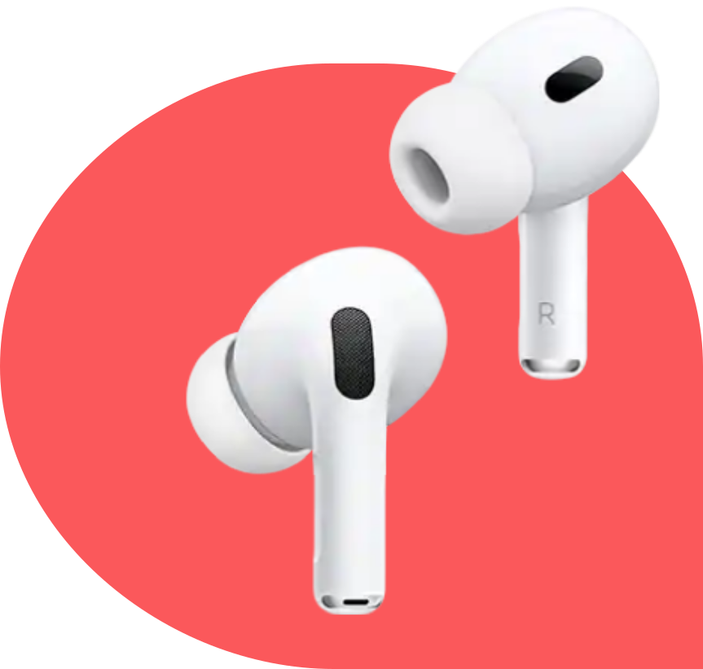
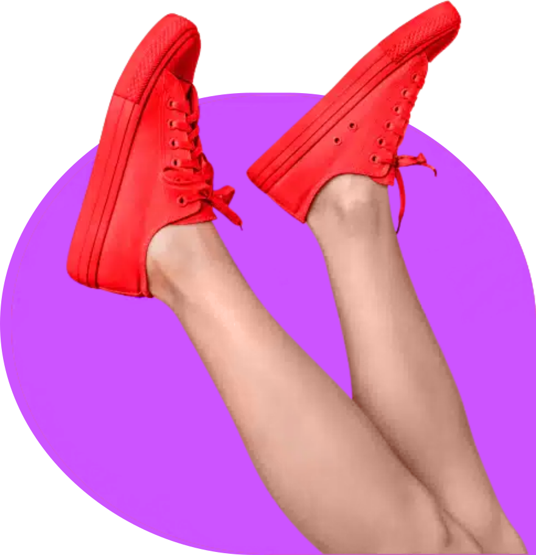
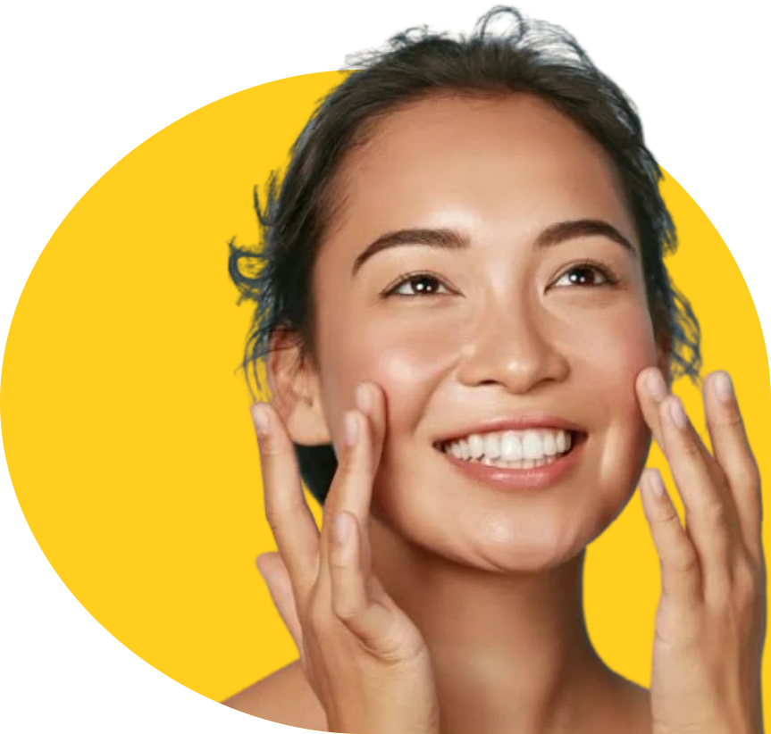
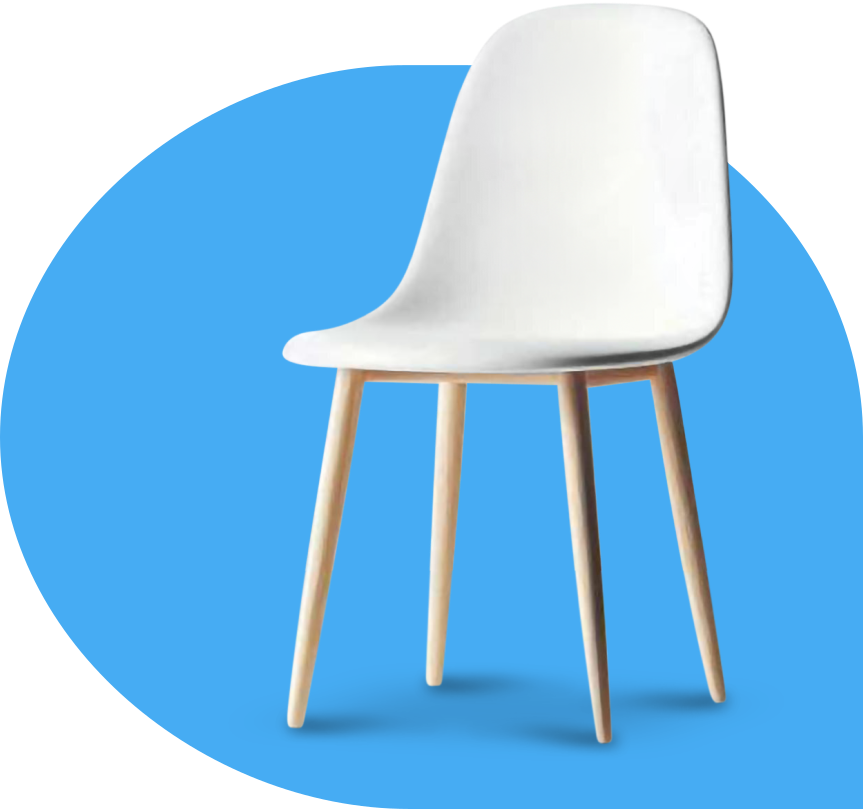

Get perfectly edited images in as little as 6 hours
From a simple white background to the most complex clipping paths. Get pixel perfect professional photo editing services , whenever you need them.




Best Clipping Path Company
Need perfect photos for your business or personal use? Logo House is here to help! We offer easy and affordable photo editing services to make your images look amazing.
Our services include Clipping Path, Clipping Mask in Photoshop, Product Photo Editing, Portrait Retouching, Image Masking, Color Correction, Jewelry Retouching, Logo Design, Raster to Vector, and Photo Manipulation.
Outsource your projects to our professional Photoshop and Illustrator designers and get high-quality results within 6 to 24 hours. Our services are perfect for photographers, eCommerce stores, and businesses that need professional visuals.
Get StartedClipping Path Services

clipping path service
We are the most reliable Clipping Path Service provider in the industry. Our skilled team of graphic designers work hard to provide you with top-quality clipping path services. We pay attention to every detail. We offer great solutions for photographers, graphic designers and ecommerce owners.We can finish your orders quickly and keep high quality. This way, you can deliver important projects to your clients on time. We have different pricing options. This helps us meet your needs and give you the best value for your money.As for your images you have no need to worry as we have measures to keep your privacy and sensitive information safe.

Complex Clipping Path
High-quality image editing relies on complex clipping path services to achieve precise, professional results. Complex clipping paths are different from basic ones. They serve more detailed tasks. This includes isolating hair, fur, or transparent objects.Using complex clipping path services can really improve the look of your images. If you have an online store, you want to display your products clearly. If you are a photographer, you need good edits. These services can help you with both. They pay close attention to detail, making your images stand out.It makes your visuals look better.

e-commerce Photo Editing
We are ready to change the product photos to fit your needs. We offer many services. These include cutout on white, background removal, color correction, image resizing, and creating artificial shadows. We can add different effects to the images and fix any flaws. This will improve the look and appeal of your products to potential buyers.Our service includes: - Photoshop Clipping Path - Background Removal - Photo Retouching - Color Correction - Image Resize and Crop - Shadows and Reflections - Image Enhancement - Customized EditsFor questions, doubts, and ideas, we prefer phone or email.

Image Shadowing
We provide professional shadow making in Photoshop. This helps create beautiful and realistic shadows for your product photos. You know how important it is to focus on the visual presentation of your products. If you need natural shadows, drop shadows, reflection shadows, or a mix of these, we can help you.Improve Your Product Photographs Today! To attract customers and encourage them to buy your product, our Photoshop shadow service can help. We can help you create shadows. This service is for E-commerce retailers, professional photographers, and graphic design agencies.There are three types of shadow making services. Original shadowing, natural shadowing, and drop shadow making service. We can make it upon client demands. Let me know which type you're referring to or if it's something different! If you have any sample to follow it will be helpful for our shadow making experts.

Jewelry Retouching
Are you a jewelry business owner, designer, or photographer looking for the best way to showcase your beautiful pieces? Our Jewelry Photo Retouching Service stands out as one of the premier options available in the market today. We specialize in enhancing the visual appeal of jewelry images, ensuring that every piece shines with its true brilliance.The jewelry retouching process is careful and detailed. It needs a sharp eye for detail and a good understanding of the materials. We focus on cleaning, scratch removal, and polishing.We remove bad reflections and edit the digital images. We correct contrast and brightness as need. We eliminate backgrounds from the jewelry. Finally, we create shadows and add finishing touches.Choose us and make your images sparkling with the help of our Jewelry Photo Retouching Service. Feel free to contact us to know more details and get the amazing result you’ve been looking for!

Color Correction
Welcome to our Photoshop Color Correction service. We are here to turn your photos into beautiful works of art. Color correction is not just about making your images look good; it's about conveying the right mood and emotion. The colors in a photograph can significantly influence how viewers perceive the subject matter. We understand the nuances of color theory and the impact it has on visual storytelling. We want to ensure that the final product not only meets your expectations but exceeds them. We stay updated with industry trends to provide you with the best service possible. We understand that every project is unique. That's why we take the time to listen to your specific requirements and tailor our services to meet your vision. Get a quote today from Clipping Path AI to learn about how we can help with your color correction today. The minimum price that we offer for color correction service is $0.39 per Image.

Neck Join
Are you currently involved in the clothing manufacturing or retail industry? Creating high-quality, attention-grabbing products is crucial for success in today's competitive market.Our high-quality neck join services enhance your clothing line's visual appeal and craftsmanship for a lasting customer impression. Allow us to present our Guaranteed Ghost Mannequin Service tailored to meet all your clothing photography needs. Our Ghost Mannequin Service encompasses various types of apparel, such as:- Tops, Shirts, and Blouses- Trousers, Jeans, and Pants- Dresses, Skirts, and Gowns- Coats, Jackets, and Outerwear- Swimwear and Shorts- Lingerie and Undergarments- Hosiery and Socks- Sportswear and ActivewearGet in touch with us today to discuss your needs, and let us elevate your clothing line in ways you never imagined!

Image Masking
Image masking is the art of removing backgrounds from an image. Clipping mask on Photoshop creates a clean look that appears natural and untouched.Whether you have straight European hair or curly hair, our specialists use the latest technology. We mask individual hair strands and other details. This makes our cutouts blend perfectly into any background.The Image Masking service is perfect for anyone who needs photo editing. This includes selling products online or for publication.We provide high-quality work. We also understand that you have limited time and money. To ensure complete customer satisfaction, We offer free alterations until your project reaches perfection.Do you want to increase product image appeal and make the pictures look more attractive to a potential buyer? Please try us for free of cost.

Portrait Retouching
We transform your pictures into unique pieces of art! We are a team of professional Graphic designers work on digital face adjustments for portraits. We also enhance eyes and teeth. Skin retouching, body shaping, fabric retouching, hair retouching, background adjustments, color enhancement are the major parts of fashion retouching services.Hair cloning is another important task. They clean backgrounds and apply creative color grading. Finally, they add any necessary facial makeup.No matter your purpose, whether for business, memories, or social media, we dedicate ourselves to improving your photos. We can change boring images into artistic masterpieces that you would want to display at home.To get a quote, check the price list. You can also contact us now. Join our clients and enjoy the Portrait Retouching service!